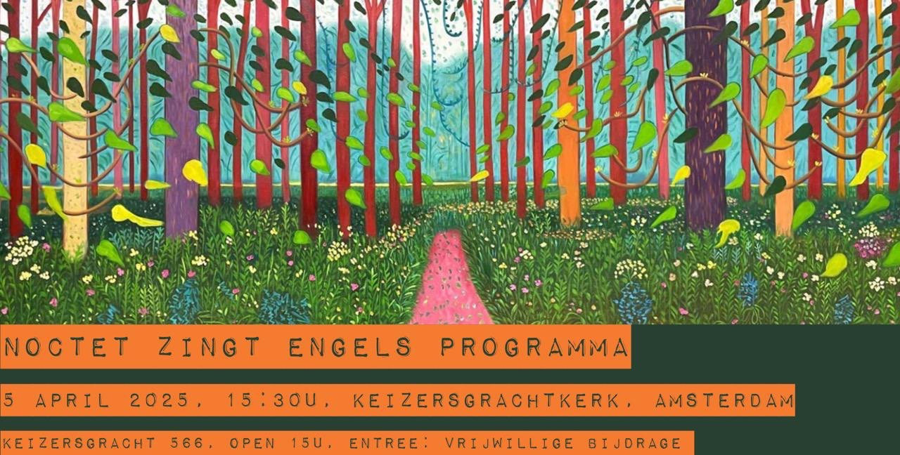

Zaterdag 5 april 2025: Engels Programma
Zaterdag 5 april zingen wij werken van Tallis, Macmillan, Byrd, Purcell, Sullivan, Britten en anderen
Locatie: Keizersgrachtkerk (Keizersgracht 566) in Amsterdam
Aanvang: 15:30 uur
Vrije entree (vrijwillige bijdrage na afloop)